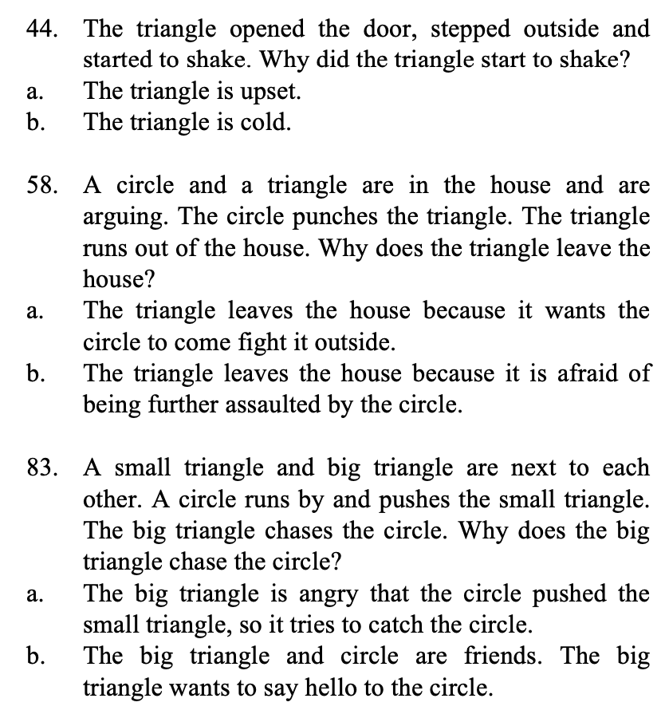
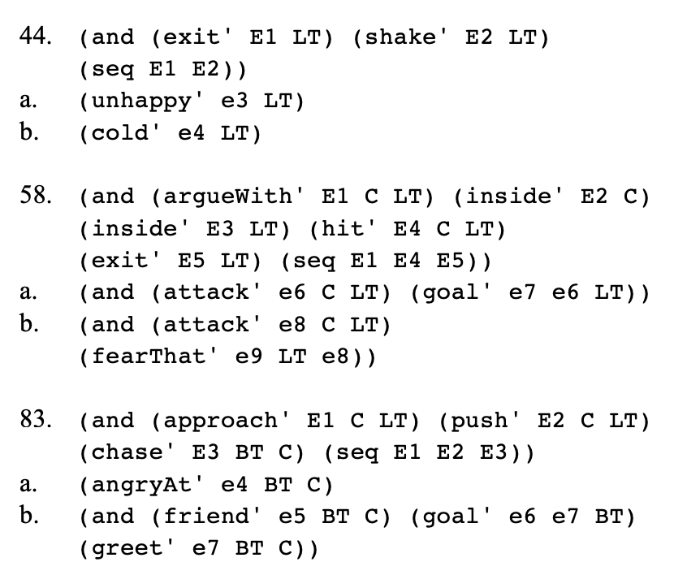
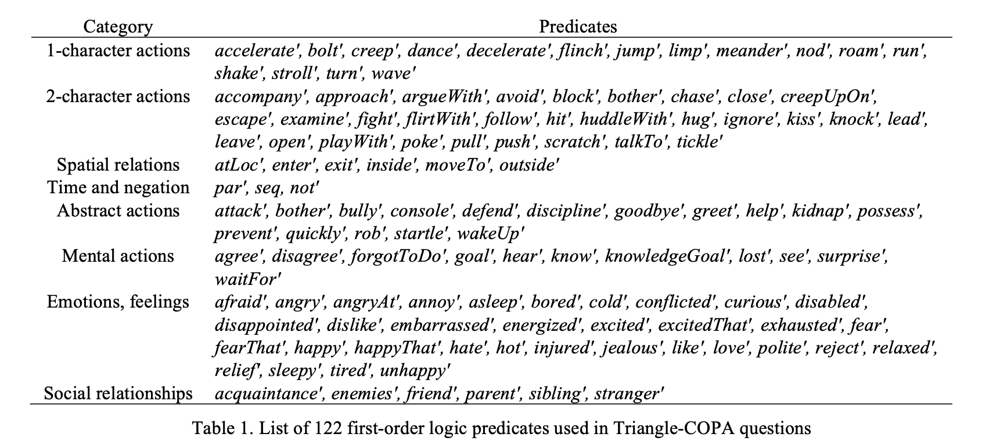

While working with the Narrative Group at USC Institute for Creative Technologies, I helped create a set of tests, named the Triangle-COPA, to aid in the development of a storytelling AI.
Humans do a lot of interpretation when trying to understand what other people are thinking, feeling, or why they are doing what they do. The video below is one example of how we naturally anthropomorphize even the simplest shapes into narratives.
Yet, describing exactly how we do this is incredibly challenging and something even the most sophisticated AI struggles to do.
The field of commonsense psychology aims to clearly describe how we think about motivations, choices, emotions, thoughts, and more.
While working on this project, I created 100 questions inspired from clips similar to the one shown above. These questions were designed to get at elicit the fundamental commonsense reasoning we do on a daily basis - yet designed to test how an AI could perform this task.
To do this, I began by writing out questions in the natural language we use on a daily basis.
I deconstructed intepretations into conjunctions of first-order logic literals.
In doing so, I created a list of categories including abstract and mental actions (such as 'greet', 'help', 'know') and emotions (such as 'like', 'reject', and 'tired').
Throughout my work, I developed a richer understanding and appreciation for human motivations, behaviors, and emotions and gained the tools to both understand and describe these complexities.
One of my favorite parts of working on projects is presenting my work in a compelling and novel way to others. Not only did I get to present my work to the ICT community but I also had the opportunity to co-author papers and attend conferences. From this experience, I learned how to contextualize my work in relevant to communities of different backgrounds.